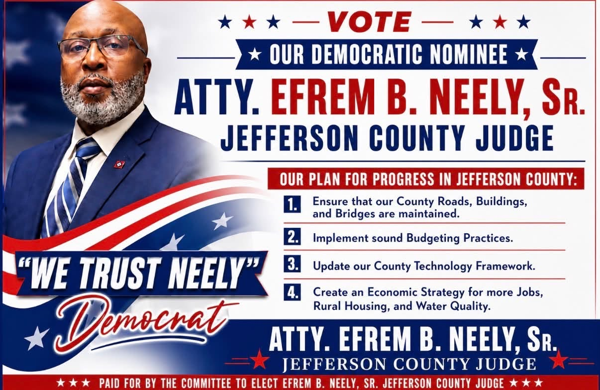

Jefferson County, Arkansas
“A Servant Leader with a Vision for Progress.”
Attorney Efrem B. Neely, Sr. brings decades of professional, business, legal, judicial, and community leadership experience to his campaign for Jefferson County Judge.
WE TRUST NEELY

Education, leadership, service and experience.
Campaign priorities for Jefferson County.
Ensure that county roads, buildings, and bridges are maintained.
Implement sound budgeting practices and responsible county management.
Update Jefferson County's technology framework.
Develop strategies supporting jobs, rural housing, and water quality.